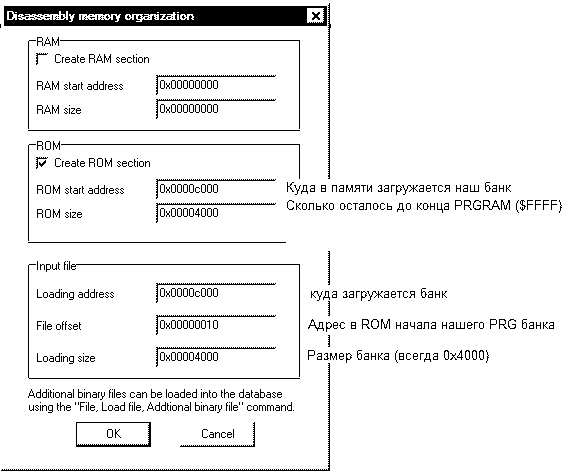

| NEWS | ARTiCLES | PASSGENS | ARCHiVE | ABOUT |
Итак, пришло время поговорить о применении IDA в анализе кода игр NES . Что такое IDA? Для чего она нужна? Ответы на эти и многие другие вопросы легко найти в Интернете, так как IDA – наиболее популярный на сегодняшний день дизассемблер, что частично подтверждает его заоблачная цена (к несчастью, сломанные версии довольно трудно найти ( IDA отказывается анализировать сама себя ;)), однако они существуют). Я рекомендую найти версию не ниже 5.0: здесь появился ‘graph disassembly view’(вообще-то, он был и в более ранних версиях в виде ‘display flow chart’, но пользоваться им было не так удобно). Смысл этой функции в представлении куска кода (обычно IDA сама определяет границы подпрограммы) в виде графа (немного похоже на блок схему, если кто никогда не видел графа). Анализировать код стало ЗНАЧИТЕЛЬНО легче и приятнее.
Одним из главных плюсов IDA является поддержка огромного числа процессоров, в том числе и нашего любимого М6502. К сожалению, структура ROM а NES такова, что сходу загрузить его в IDA и начать анализ (я уж не говорю об автоматическом анализе) просто невозможно, поэтому этот документ и получил возможность увидеть свет.
Ну что ж, в качестве жертвы возьмем ROM ‘Battle City ( J )’. Открываем IDA (я буду показывать на примере 5.0) и нажимаем кнопку NEW и выбираем наш ROM . В появившемся окошке нужно выбрать в верхней части ‘binary file’, а в графе ‘processor type’ находим и выставляем строчку ‘MOS technology 65 xx series: M 6502’ и жмем ‘set’, а затем OK. Итак, вот и окно загрузки:

Объясню все поподробнее. Банк, который мы собираемся рассматривать, загружается по определенному адресу в памяти. По какому? Ну, в общем случае, всё зависит от маппера. Скажем, самый распространенный mmc 3 оперирует 8кБ банками (размером 0х2000). Поэтому теоретически адрес загрузки может быть $8000, $ A 000, $ C 000, $ E 000. Универсальный способ поиска физического адреса начала нужного банка в ROM и адреса его загрузки подсказать сложно (что-то можно почерпнуть из message log в FCEU , что-то в отладчике FCEUXD , который показывает реальный адрес выделенной команды в ROM ), в любом случае, это не является целью данного документа. Итак, у нашей жертвы нулевой маппер. Это означает, что оперирует она банками по 32кБ, однако, судя по Message Log , банк PRG ROM составляет всего 16кБ, а это значит, что он будет повторен в адресном пространстве 8000− FFFF два раза. А судя по адресам, на которые ссылаются вектора прерываний, адрес загрузки - $ C000. Также должно быть ясно, что наш единственный банк начинается в файле ROM сразу после заголовка (0 x 10 байт). Что же касается размера банка, то он не всегда может быть 0х4000, однако это самый распространенный вариант (опять же, все зависит от маппера). И вообще говоря, размер банка не критичен – главное, чтобы его размер захватывал интересующий нас код. Что же касается всех приведенных на картинке цифр, то они, разумеется, могут быть любыми – в зависимости от того, что предлагает вам сама структура ROM.
*добавлено позднее:
Как показывает опыт (на самом деле, CaH4e3 открыл мне глаза), гораздо легче, быстрее и проще просто выдрать весь код из памяти самой приставки, где он уже на своём месте. Для того, чтобы сделать это, нужно открыть всеми любимый FCEUXDSP, остановиться при помощи точки останова в нужном нам месте, нажать F6, выделить все байты от 0000−FFFF (после нескольких тренировок это будет занимать несколько секунд) и выбрав edit ->copy, скопировать все байты в буффер обмена. Далее открываем свой любимый хексредактор (я покажу на примере winhex). Жмём Shift+Ins, в открывшемся меню выбираем ASCII Hex, и, убедившись в верности вставленных данных, сохраняем новый файл, скажем, как ‘Code.bin’. И, наконец, дизассемблируем его в IDA безо всяких извращений с загрузкой. Выбираем наш любимый процессор, а в окошке ручной загрузки оставляем все нули. Весь процесс занимает буквально одну минуту, избавляя нас от мороки подсчета нужных адресов, а результат даже лучше. Понятно, что этот метод годится только если вы хотите просто исследовать те банки, которые в данный момент у вас находятся в памяти.
Итак, если все было введено правильно, то мы получим «простыню» из байт нашего банка. Проследите за тем, чтобы конечный адрес был $ FFFF . Теперь пришло время пустить в ход мой скрипт: file -> IDC file и выбираем файл скрипта ‘HardwiredBank.idc’ (его можно взять из этого архива) и выполняем его, нажав на «шестерёнку». После чего, в нашем проекте появились область RAM (их легко переименовывать, что очень облегчает понимание кода), область регистров (они уже переименованы и теперь в коде вместо непонятного адреса регистра фигурирует его название) и, наконец, определены вектора прерываний и проанализирован код, на который они указывают. Всё остальное – забота человека: найти и разделить код и данные, откомментировать куски кода, переименовать ячейки в RAM или непосредственно процедуры и т.п. Вообще не стоит уповать на всемогущество IDA : она не умеет отделять код от данных (зато это умеет делать code / data logger в FCEUXDSP ), а потому иногда возникают досадные ляпы. Например, в случае Battle City в процедуре по адресу $ EBE1 после команды JSR sub_ECD0 должны идти данные, а дизассемблер распознал их как код. И наоборот. Скажем, есть такая команда jmp(oper), благодаря которой ОЧЕНЬ часто кусок кода остается нераспознанным.
Назначать байт в код можно клавишей ‘c’, а в данные – клавишей ‘d’, однако это уже выходит за рамки нашей тематики – кому нужно, смогут легко разобраться в программе, благо она очень ‘user friendly’.
На сладкое – создание сырцов из проекта в IDA . Если вы запускали мой скрипт, то вполне можете создать файл с расширением *. asm , который спокойно компилируется под ассемблером от Loopy ‘asm 6’. Для чего необходимо:
Всё! Сырец готов к компиляции.
Далее, опишу некоторые хитрости при работе с asm 6.
Если в процессе сборки возникают ошибки, то, скорее всего, IDA определила где-то данные как код (в сущности, это безвредно, хотя встречаются команды типа RLA , которые asm 6 не понимает).
Для комфортной работы я бы рекомендовал в файле ida.cfg поменять секцию:
NameChars = "$?@-+" // asm specific character Чтобы можно было ставить ‘+’ и ‘- ‘ это спецсимволы для reusable лейблов в asm 6. Именно из-за этих лейблов в именах процедур не может быть ‘+’ или ‘-’. Могут возникнуть проблемы с загрузкой указателей на данные. Для чего могу рекомендовать использовать ручное изменение операндов. Например, команда загрузки старшего байта указателя на стринг ‘BATTLE’ будет выглядеть так:
lda #>aBattle , где
D299 aBattle :' Battle ' В итоге, asm 6 преобразует в: lda #$D2
Это все хорошо, но вот что делать, если нам нужно анализировать/сделать сырец банка игры, которая сидит не на нулевом маппере (а таких 90%)? Иными словами, возьмем более сложную игру с большим количеством банков. В случае если интересующий нас банк «коренной» (последний PRG банк), то процедура загрузки не меняется. Если же интересующая нас процедура находится в «некоренном» банке, то при загрузке нам достаточно указать другие адреса загрузки и использовать скрипт ‘NormalBank . idc’ (он просто немного подредактирован, чтобы не производить анализ кода по адресам, на которые указывают вектора прерываний, коих в «некоренных» банках быть не может). Разумеется, в этом случае, вы должны будете сами определить с какого места начинать анализировать.
Однако теперь потеряна возможность анализа кода, расположенного в «коренном» банке – ведь в реальном адресном пространстве находятся нужные банки + «коренной» и, вполне возможно в нашей подпрограмме используются некоторые процедуры «коренного» банка. Поэтому, если вы хотите загрузить два (или более) банков в память, в первую очередь необходимо найти их физические адреса в ROM , затем загрузить первый, после чего командой File -> Load File -> Additional binary file … и указать тот же ROM , однако изменить адреса источника и адреса памяти, куда будет загружаться банк (для простоты можно в графе Loading Segment всегда выставлять ноль и убирать галку с Create Segments ). После чего можно смело использовать ‘HardwiredBank . idc’ В общем-то, ничего особенного: если вы поняли все, что я до этого объяснял, с этим трудностей возникнуть не должно.
*добавлено позднее:
К счастью, прогресс (в смысле CaH4e3, конечно) не стоит на месте и постоянно стремится облегчить нашу жизнь. Не так давно, наш гуру покопался в SDK IDA и написал первый в мире загрузчик ROM’ов в формате iNES, любезно предоставив нам возможность его усовершенствования и оставив сырцы. Итак, как им пользоваться. Берём файлик ‘ines.ldw’, помещаем его в директорию IDA в папку loaders (...), а потом просто открываем чистейший файл *.nes в IDA - загрузчик вылезет сам. Нам остаётся только выбрать его и наслаждаться слаженной работой. Работает он по тому же принципу, что и мой скрипт - находит адреса, на которые указывают вектора и дизассемблирует их. Сами векторы теперь можно будет найти во вкладке ‘Exports’. А прелесть загрузчика в том, что он может создавать листинги сразу всех банков разом без утомительных добавлений двоичных файлов и работы в хексредакторе. Так что давайте поблагодарим CaH4e3’а и пожелаем ему дальнейших успехов.
“Tip of Day: если надо перебросить вызов подпрограммы в другой банк, на имени функции в опкоде нажать Alt+R и выбрать нужный.”
Как следует из исходного кода загрузчика, он предназначен для игр с 0,1,2,3,4,7,11,121,216 мапперами, что перекрывает большинство игр. Однако, если вы хотите использовать загрузчик для игр с другими мапперами, придется несколько модифицировать загрузчик, добавив ему функциональности.